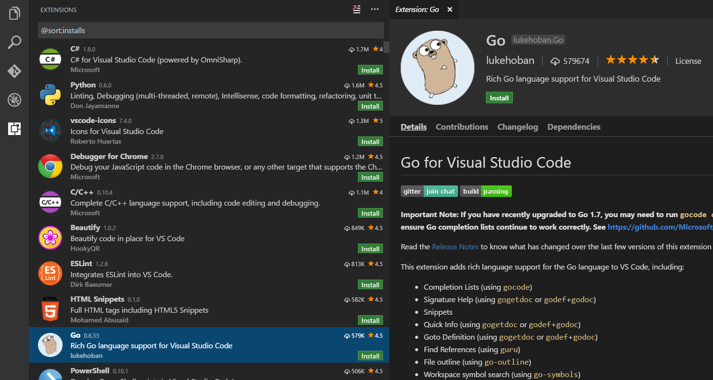
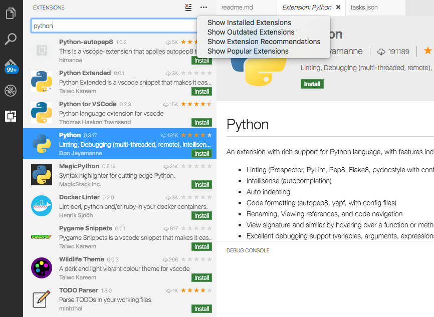
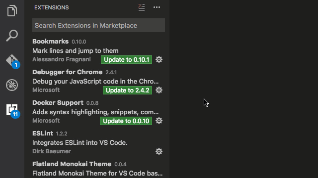
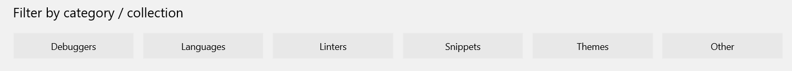
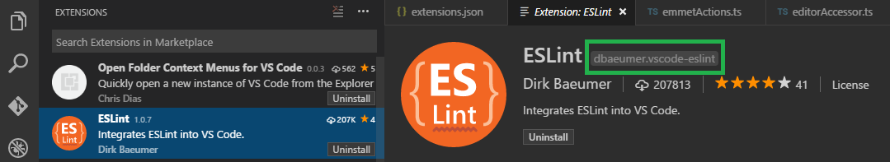
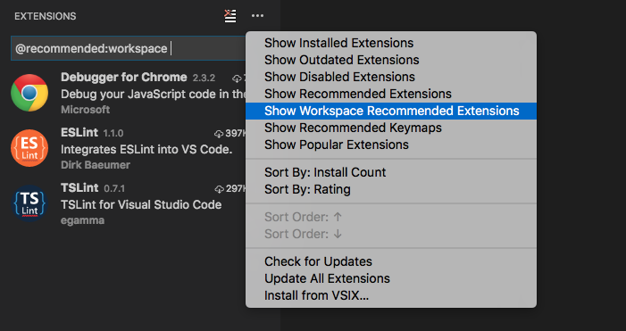

Increase the power of VS Code through Extensions
The features that VS Code includes out-of-the-box are just the start. VS Code extensions let you add languages, debuggers, and tools to your installation to support your development workflow. VS Code’s rich extensibility model lets extension authors plug directly into the VS Code UI and contribute functionality through the same APIs used by VS Code. This topic explains how to find, install, and manage VS Code extensions.
Browse and Install Extensions in VS Code
You can browse and install extensions from within VS Code. Bring up the Extensions view by clicking on the Extensions icon in the View Bar on the side of VS Code.
This will show you a list of the most popular VS Code extensions on the VS Code Marketplace.

Each extension in the list includes a brief description, the publisher, the download count and a five star rating. You can click on the extension item to display the extension’s VS Code Marketplace page where you can learn more.
Note: If your computer’s Internet access goes through a proxy server, you will need to configure the proxy server. See Proxy Server Support for details.
By clicking on the view’s ... More button, it is possible to show:
- The list of currently installed extensions
- The list of outdated extensions that can be updated
- The list of recommended extensions based on your workspace
- The list of globally popular extensions
You can sort the extension list by Install Count or Rating in either ascending or descending order.
Install an Extension
Simply click the Install button and after a successful install, you’ll see an Enable button which will prompt you to restart VS Code to enable the new extension.
Search for an Extension
You can clear the Search box at the top of the Extensions View and type in the name of the extension, tool or programming language you’re looking for.
For example, typing ‘python’ will bring up a list of Python language extensions:

You can see a list of recommended extensions (based on your workspace file types), using Show Recommended Extensions which sets the ‘@recommended’ filter.
List Installed Extensions
Show Installed Extensions will clear the search box and shows the list of installed extensions.
Uninstall an Extension
To uninstall an extension, click the Uninstall button. This will uninstall the extension and prompt you to restart VS Code.
Update an Extension
You can quickly look for extension updates by using the Show Outdated Extensions command which uses the ‘@outdated’ filter. This will display any available updates for your currently installed extensions. Simply click the Update button for the outdated extension and the update will be installed and you’ll be prompted to restart VS Code. You can also update all your outdated extensions at one time with the Update All Extensions command.
Auto Update Extensions
If you would like your installed extensions to be updated automatically, you can use the extensions.autoUpdate setting. When set to true, VS Code will download new versions of outdated extensions automatically and you will just need to restart VS Code when you see the blue Enable button in the Installed Extensions list.
Disable an Extension
Disable an extension by clicking the settings icon next to the extension, as shown in the animation below.

Alternatively, you can disable all extensions through the command line with the --disable-extensions option as shown below.
|
Browse Extensions
Additionally, you can browse and search for VS Code extensions through the VS Code Marketplace site. Below is a sampling of the most popular extensions.
You can review our handy Featured, Most Popular, and Recently Added extension lists and filter by Category (Debuggers, Languages, Linters, etc).

Command Line Extension Management
To make it easier to automate and configure VS Code, it is possible to list, install, and uninstall extensions from the command line. When identifying an extension, provide the full name of the form publisher.extension, for example donjayamanne.python.
Example:
|
Workspace Recommended Extensions
Often you have a set of extensions that makes working with a particular workspace or programming language more productive and you’d like to share this list with your team or colleagues. You can create a recommended list of extensions for a workspace with the Extensions: Configure Workspace Recommended Extensions command. This creates a extensions.json file located in the workspace .vscode folder where you can list extensions.
An example extensions.json could be:
|
which recommends two linter extensions, TSLint and ESLint, as well as the Chrome debugger extension.
An extension is identified using its publisher name and extension identifier publisher.extension. You can see the name on the extension’s detail page.
.
VS Code prompts a user to install the recommended extensions when a workspace is opened for the first time. The user can also review the list with the Extensions: Show Workspace Recommended Extensions command.

Next Steps
Here are a few topics you may find interesting…
- Publishing to the Marketplace - Publish your own customization or extension to the VS Code Marketplace
- Customization - Learn how to integrate TextMate themes, colorizers and snippets into Visual Studio Code.
- Yo Code - Learn how the Yo Code extension generator can scaffold out new extensions and package existing TextMate files.
- Extending Visual Studio Code - Start learning about VS Code extensibility
- Your First Extension - Try creating a simple Hello World extension
Common Questions
Q: Can I download an extension directly from the Marketplace?
A: Some users prefer to download an extension once from the Marketplace and then install it multiple times from a local share. This is useful when there are connectivity concerns or if your development team wants to use a fixed set of extensions.
An extension’s direct download URL is in the form:
|
For example, the ESLint extension version 0.10.18 would be:
|
Once you’ve downloaded an extension, you can side load it by renaming the .zip filename extension to .vsix and then using the Install from VSIX… command in the Extensions View command dropdown. See Installing Extensions for more details.
Q: Can VS Code read TextMate bundles directly?
A: No, VS Code can read some TextMate files such as .tmTheme and .tmLanguage but can not install full TextMate bundles. Also in order to use TextMate theme and syntax files, VS Code needs extra metadata for integration. The Yo Code extension generator makes it easy to package these files for use in VS Code.
Q: Can I install Visual Studio Community extensions (shipped in .vsix) in Visual Studio Code?
A: No, Visual Studio Code’s extensibility points are different from Visual Studio Community.
Q: Whenever I try to install any extension, I get a connect ETIMEDOUT error.
A: You may see this error if your machine is going through a proxy server to access the Internet. See the Proxy Server Support section in SETUP topic for details.